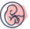
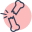
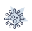
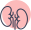

لیست تخصص ها
گوارش، کبد و آندوسکپی
غدد و متابولیسم
گوش، حلق وبینی
مغز و اعصاب
خون و آنکولوژی

زنان و زایمان
پوست و مو

روماتولوژی
جراحی مغز و اعصاب
وانپزشکی، اعصاب و روان
اورتپدی
سایر تخصص ها
مشاوره آنلاین
روانشناس
زنان، زایمان و نازایی
غدد و متابولیسم
گوارش، کبد و آندوسکپی
کودکان
مشاهده آنلاین فوری
روانپزشک(اعصاب و روان)

بیماری های عفونی و تب دار
پوست و مو

کلیه و مجاری ادراری (اورولوژی)
گوش، حلق وبینی
مشاهده همه
مجله پزشکی
عضویت پزشکان
کرونا سازمانی
لیست تخصص ها
مشاوره آنلاین
مجله پزشکی
عضویت پزشکان
کرونا سازمانی
ورود